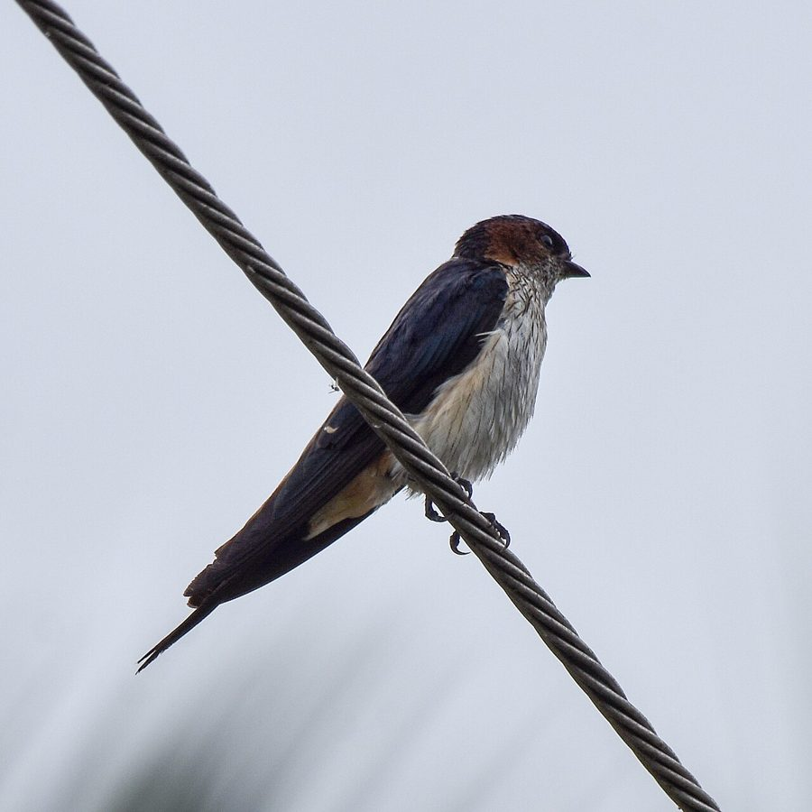

स्ट्रीक-थ्रोटेड स्वैलोStreak-throated Swallow
Petrochelidon fluvicola · Hirundinidae · BRD-0165

- Scientific nameवैज्ञानिक नाम
- Petrochelidon fluvicola (Swainson, 1838)
- Familyकुल
- Hirundinidae
- Hindiहिंदी
- स्ट्रीक-थ्रोटेड स्वैलो
- Local namesस्थानीय नाम
- streak throated swallow, streak-throated swallow, ababeel, swallow
- Status hereयहाँ की स्थिति
- native
- Movementआवागमन
- Resident, here all year
- IUCNIUCN
- LC
- Reviewसमीक्षा
- audited and independently read
When to look कब देखें
Present all year.साल भर मौजूद।
Tell it apart from इनसे अलग पहचानें
स्ट्रीक-थ्रोटेड स्वैलो / Streak-throated Swallow
Petrochelidon fluvicola (Swainson, 1838) — Hirundinidae
स्ट्रीक-थ्रोटेड स्वैलो — बस्ती की नदियों और पुलों के पास साल भर रहने वाली एक छोटी तेज़ गतिविधि वाली चिड़िया। इसका शरीर गहरे नीले-काले रंग का होता है और पेट सफेद होता है, गले में काली धारियां (streaks) होती हैं। यह चिड़िया आकाश में तेज़ गति से उड़ती है, छोटी मक्खियों और कीटों को पकड़ती है। इसका घोंसला कीचड़ का बना होता है, जो पुलों, चट्टानों और इमारतों के नीचे बनाया जाता है। ये एक सामाजिक पक्षी है और बड़े झुंड में उड़ता है। नदियों के ऊपर इसकी उड़ान को देखना एक सुंदर दृश्य है।
Quick Identification त्वरित पहचान
| Feature | Description |
|---|---|
| Size | Small swallow; 17–18 cm long |
| Upperparts | Dark blue-black; glossy in good light |
| Underparts | White; with distinctive black streaks on throat and chest |
| Tail | Forked but less deeply than barn swallows; dark |
| Bill | Very small, flattened, adapted for aerial insect capture |
| Behaviour | Highly aerial; swift, erratic flight; often in large flocks |
| Nests | Mud-cup nests under cliffs, bridges, buildings |
Field tip: A small, dark-backed swallow with white underparts and black streaks on the throat, seen in fast, erratic flight over rivers and open areas. Often seen in large, tightly-coordinated flocks.
हिंदी — कैसे पहचानें:
नीले-काले रंग की पीठ, सफेद पेट।
गले में काली धारियां।
आकाश में तेज़ गति से उड़ता है।
झुंड में उड़ान भरता है।
Morphology आकारिकी
Biometrics:
| Measurement | Range |
|---|---|
| Total length | 170–180 mm |
| Wing | 120–135 mm |
| Tail | 60–75 mm |
| Bill | 8–10 mm |
Plumage: Upperparts glossy dark blue-black, brightest on the crown and back. Wing and tail feathers black with subtle blue iridescence in good light. Throat and upper breast white with distinctive black streaks or stippling — the key identification feature. Lower breast and belly pure white. Undertail coverts dark, sometimes with white spots.
Bill: Very small, flattened dorso-ventrally, adapted for catching small insects in flight. Dark brown to black.
Feet: Small and dark; adapted for clinging to nest structure rather than perching.
Eyes: Small, dark brown.
Sexes: Males slightly larger and darker than females; both show similar plumage patterns.
Vocalisations. Call repertoire:
- Contact call: A soft "chirp" or "chip", given frequently during flight and at rest.
- Alarm call: Harsh chattering when predator is detected or nest is threatened.
- Song: Simple twittering during breeding season, given from perches or in flight.
हिंदी: तेज़ "चिप-चिप" आवाज़, झुंड में सामूहिक आवाज़।
Behaviour & Ecology व्यवहार और पारिस्थितिकी
Aerial insectivore: Streak-throated Swallows feed exclusively in flight, catching small insects on the wing. They exhibit rapid, erratic flight patterns, twisting and turning through the air to pursue prey.
Highly gregarious: Outside breeding season, they form large flocks (sometimes 50–100+ birds), often feeding together with other swallow species. Flocks are coordinated, with birds flying in loosely organized formation.
Cliff nesters: They build mud-cup nests in colonies, often on steep cliffs, river gorges, under bridges, or on buildings. Nests are constructed from clay pellets carried in the bill.
Colonial breeding: Multiple pairs nest in close proximity, offering safety in numbers against predators.
Seasonal activity: Year-round in eastern UP, though some local movements may occur with food availability (increased insect abundance during monsoon).
Life Cycle / Phenology जीवन चक्र
| Stage / season | Event |
|---|---|
| January–February | Pair bonding; site selection for nest building |
| February–April | Nest building and egg-laying; clutch 3–4 eggs |
| April–June | Incubation and chick-rearing |
| June–July | Fledging; dependent fledglings may return to nests for roosting |
| July–December | Non-breeding; form flocks; feed opportunistically |
| Year-round | Resident; local movements possible |
Host Plants or Prey आहार
| Prey Type | Examples | Feeding Method |
|---|---|---|
| Small insects | Flies, mosquitoes, small beetles | Aerial pursuit |
| Insect larvae | Small larvae in flight | Aerial pursuit |
| Winged insects | Ants, small wasps, gnats | Aerial pursuit |
हिंदी: मक्खियों, मच्छरों और छोटे कीटों का भक्षण। आकाश में ही शिकार करता है।
Predators / Natural Enemies शत्रु
- Avian predators: Kestrels, shrikes, occasionally larger birds of prey
- Mammalian predators: Snakes (nest predators), rats, monitor lizards
- Nest predators: Corvids, sparrows competing for nests
हिंदी: बाज़, सांप घोंसलों का शिकार करते हैं।
Agricultural / Human Relevance कृषि प्रासंगिकता
Biological pest control: Streak-throated Swallows provide significant pest control by consuming vast quantities of aerial insects, including agricultural pests like mosquitoes and gnats. A single bird may consume 100+ insects per day.
Protected status: Protected under the Wildlife (Protection) Act, 1972 (Schedule IV). Destroying nests or capturing birds is prohibited.
Human benefits: Their presence around human habitations and agricultural areas reduces disease vector populations (mosquitoes) and agricultural pests.
Cultural significance: Swallows feature in many cultures as symbols of agility and freedom.
Expected Locally स्थानीय रूप से अपेक्षित
Not a field record. Written from published accounts for eastern Uttar Pradesh. No confirmed local sighting yet — if you have seen it, that is what the atlas needs.
अभी तक स्थानीय पुष्टि नहीं। यह विवरण प्रकाशित स्रोतों से है, किसी अवलोकन से नहीं।
This species is NOT a field record. The distribution below is based on published sources describing where Streak-throated Swallows should be looked for in eastern Uttar Pradesh.
यह स्थानीय अवलोकन नहीं है। प्रकाशित स्रोतों पर आधारित।
Streak-throated Swallows are expected as year-round residents throughout Basti and Ayodhya districts, particularly near river valleys, gorges, bridges, and rocky outcrops. Look for them feeding in flocks over rivers, especially early in the morning and late afternoon. Listen for their soft "chip-chip" calls. Nests are built in colonies on cliff faces, under bridges, or on buildings. A first record should note location, time, flock size, and nest sites (if found). Submit through the atlas About page.
Distribution वितरण
Global range: Indian subcontinent; found from Pakistan to Bangladesh and Myanmar.
In India: Distributed throughout the plains and foothills; common in areas with suitable nesting sites.
In Uttar Pradesh: Widespread resident in areas with rivers, gorges, and cliffs; common along all major river systems.
In Basti district / eastern UP: Year-round resident; common along river valleys and near bridges; colonies under bridges are reliable locations.
Research Questions शोध प्रश्न
- How does colony size vary seasonally in different habitat types (cliffs vs. bridges vs. buildings) in Basti?
- What is the diet composition of these swallows, and how does it vary with season?
- What is the breeding success rate (eggs to fledglings) in different colony locations?
- बस्ती की नदियों के ऊपर इस पक्षी की कितनी बड़ी आबादी है, और क्या ये साल दर साल समान रहती है?
- Can students use binocular counts to estimate flock sizes and track population trends?
- How does pesticide and insecticide use in agricultural areas affect swallow food availability and breeding success?
Similar Species मिलती-जुलती प्रजातियाँ
| Species | Key Difference | हिंदी | Field Rule | |
|---|---|---|---|---|
| [[barn_swallow\ | Barn Swallow]] (Hirundo rustica) | Larger; deeply forked tail; chestnut throat and crown; no streaks on white underparts | देशी गौरैया | Barn Swallow is larger, has rusty head and throat, deeply forked tail. Streak-throated is smaller, lacks rusty colouration. |
| [[wire_tailed_swallow\ | Wire-tailed Swallow]] (Vsigata) | Long filamentary tail wires; rufous cap; no throat streaks | तार-पूँछ गौरैया | Wire-tailed has very long tail wires and rusty head. Streak-throated lacks these features. |
| Red-rumped Swallow (Cecropis daurica) | Rufous rump and cap; buff-coloured underparts; no throat streaks | पीठ का तिरछा | Red-rumped has rusty coloration on rump and cap. Streak-throated is dark with white underparts and throat streaks. |
Field rule: A small, dark blue-black backed swallow with white underparts and distinctive black streaks on the white throat is a Streak-throated Swallow. Larger swallows with different throat patterns or longer tail wires are different species.
Taxonomy & Classification वर्गीकरण
Original description. The Streak-throated Swallow was first described by William Swainson in 1838. The genus Petrochelidon is a small group of swallows found in Africa and Asia.
Subspecies. Petrochelidon fluvicola fluvicola — the nominate subspecies found in South Asia.
Family and order placement. Order Passeriformes; family Hirundinidae (swallows and martins). The genus Petrochelidon contains cliff-nesting swallows.
Phylogenetic notes. Petrochelidon fluvicola is closely related to African cliff swallows (P. semirufa) and shows similar ecological and behavioural adaptations to cliff-nesting.
IUCN status rationale. Listed as Least Concern (LC) due to wide range, stable populations, and ability to adapt to human-modified structures (bridges, buildings) for nesting.
Photo Gallery फोटो गैलरी
No photos yet — add field photos to media/species/streak_throated_swallow/ and run node scripts/sync_photos.js.
Wanted photos:
- Flock in flight over river
- Close-up showing throat streaks
- Mud nests under bridge or cliff
- Feeding behaviour (difficult to capture)
- Roosting flock at dusk
References संदर्भ
- Swainson, W. (1838). Zoological Illustrations. Series 2, Vol. 3.
- Ali, S. & Ripley, S. D. (1972). Handbook of the Birds of India and Pakistan. Vol. 3 (Warblers to Redstarts). Oxford University Press, Delhi. Pp. 287–288.
- Grimmett, R., Inskipp, C. & Inskipp, T. (2011). Birds of the Indian Subcontinent (2nd edn). Oxford University Press, New Delhi. Pp. 363–364.
- Turner, A. & Rose, C. (1989). A Handbook to the Swallows, Martins and Saw-wings of the World. Christopher Helm, London. Pp. 184–185.
- IUCN Red List (2023). Petrochelidon fluvicola — BirdLife International assessment. Status: Least Concern.
- GBIF Occurrence Data — Petrochelidon fluvicola, India (2026).
Source file: species/fauna/birds/streak_throated_swallow.md